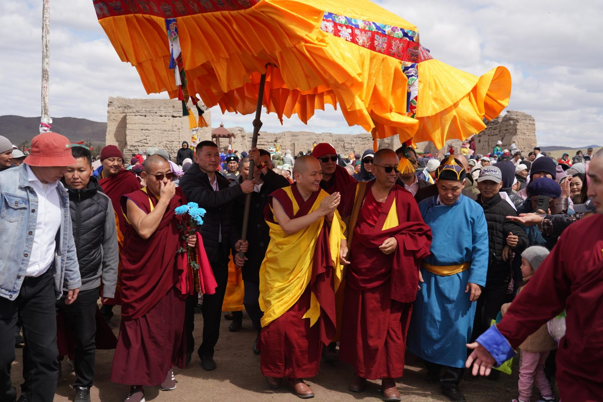

Visit to Ladakh for Teaching Engagements

His Eminence Kundeling Tatsak Rinpoche visited Ladakh in August 2025 for a series of teaching engagements, blessing ceremonies, and meetings with local Buddhist communities. Ladakh, often called "Little Tibet," remains one of the most vibrant centres of Tibetan Buddhist culture in India, with a centuries-old tradition of monastic learning and practice.
During the visit, His Eminence gave teachings at several monasteries and community halls across the region, drawing large gatherings of monks, nuns, and lay practitioners. The teachings focused on the fundamentals of Buddhist practice — taking refuge, generating bodhicitta, and cultivating wisdom and compassion in daily life.
His Eminence also conducted blessing ceremonies at local temples and visited community projects supporting the preservation of Ladakhi Buddhist heritage. The visit reinforced the deep historical connection between the Kundeling lineage and the Buddhist communities of the Himalayan region, where the Dharma has been practised and transmitted for over a thousand years.